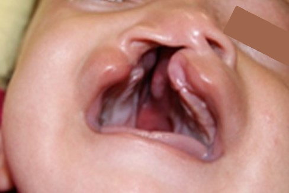

Kernahan y Stark
Para estandarizar el reporte del labio leporino y el paladar hendido, el Comité de Nomenclatura de la Asociación Americana de Rehabilitación en Paladar Hendido creó un sistema de clasificación que después fue adoptado por la Asociación del Paladar Hendido, pero dado a su alta complejidad este sistema no es el más utilizado.
En una breve revisión podemos destacar la clasificación Kernahan y Stark.
Consideran dos grupos básicos:
- fisura del paladar primario (labio y premaxila) y
- fisura del paladar secundario (paladar duro y blando posterior al foramen incisivo).
Clasificación
Oprima las flechas para ver las diferentes clasificaciones.
Fisura labial unilateral incompleta

Fisura labial bilateral incompleta
Fisura de labio unilateral, alvéolo y paladar total

Fisura de labio Bilateral, alveolo y paladar total

Fisura de paladar blando
Fisura de paladar total